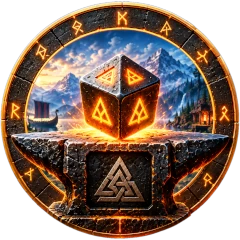

Forge of Potential Probability Calculator
A short guide for players who do not work with statistics. The examples use fixed numbers. They are not your own results.

Think of a bag with 100 stones: 65 white and 35 black. Each Forge attempt is like taking one stone without looking, then putting it back.
You cannot know which stone you will take. You only know that white stones are more common.
"65% success" does not mean your next attempt will succeed. It means that if many people make the same attempt, about 65 out of every 100 succeed.
If 100 players each try once, the result will not be exactly 65. It may be 60 or 70. The more players there are, the closer the result comes to 65 out of 100.
Example: 1000 players who have never upgraded a bow at the Forge each take a Q4 bow and keep upgrading until it breaks, with no recrafting. Where does each bow stop?
| Highest level before breaking | Bows out of 1000 | Share |
|---|---|---|
| Q4 (broke on the first try) | 350 | |
| Q5 | 316 | |
| Q6 | 168 | |
| Q7 | 99 | |
| Q8 | 67 | |
| Q9 or higher | 0 |
This table is a distribution. It shows:
Example: the calculator shows 97.4% to reach Q6 and 2.6% to lose the item. This means: if 1000 players with the same item, idols and materials follow the same plan, about 974 reach Q6 and about 26 lose their item.
You will be in one of these groups. A high percentage makes the good result likely, not certain.
The "Idols used" column is an average across many players. If it shows about 4, one player may use 2 idols and another may use 8. Both results are normal.
Even with 65% success, three breaks in a row at the same level happen to about 1 player in 23. If it happens to you, the game is not broken; you are in the less common part of the distribution.
While building this calculator, we tested the Forge with a new character in a test world with unlimited materials. We crafted hammers, upgraded them to Q3 (their normal maximum) at the workbench, and took them to the Forge one by one, with 36 Wooden Battle Idols.
After 36 attempts:
| Attempt to | Attempts | Successes | Breaks |
|---|---|---|---|
| Q4 | 18 | 12 | 6 |
| Q5 | 12 | 7 | 5 |
| Q6 | 6 | 0 | 6 |
Seventeen hammers broke, and none reached Q6. It looked as if the game had set a hidden limit for this character.
It had not. The character file showed that every attempt followed the normal rules. All six attempts at Q6 simply drew a black stone. Six breaks in a row at one level happens to about 1 player in 550. That is rare, but among thousands of players, some will see it.
The next attempt at Q6 succeeded, and a later hammer reached Q7.
What this shows:
Some items need one special ingredient, for example the Fenris Hood (1 Cultist Trophy) or the Headdress of the Bear (1 Bear Trophy). When an item breaks at the Forge, the game returns 35% of each ingredient, rounded up. 35% of 1 is 0.35, and rounded up this is 1. So the trophy always comes back, at every level. There is no chance involved.
This means one trophy is enough for any number of recrafts. The other materials, such as Bear Hide, decide how many times you can recraft.
We checked this in game: each time a Headdress of the Bear broke at the Forge, its Bear Trophy came back.